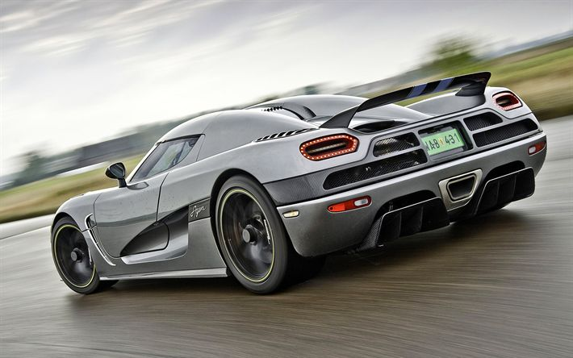
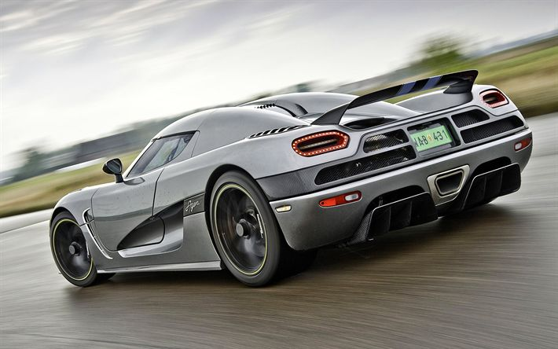

O Koenigsegg Agera R
Conta com um motor V8 biturbo de 5.0 litros que produz 1.140 cv a 7100 rpm e 1200 Nm de torque a 4100 rpm. O carro acelera de 0 a 100 km/h em 2,8 segundos. A transmissão é uma caixa de 7 velocidades de dupla embreagem com paddle shifters (borboletas no volante). O motor V8 de 5.0 litros tem um limitador de RPM ajustado para 7.500 rpm.
A carroceria do Agera é feita inteiramente de fibra de carbono com reforços estruturais de baixo peso. O teto rígido do carro é removível e pode ser guardado na tampa do capô dianteiro. O Chassi também é feito de fibra de carbono com reforços de alumínio em forma de colmeia no tanque de combustível para melhor distribuição de peso e segurança. A asa traseira é ajustada eletronicamente manualmente ou automaticamente para se ter uma melhor relação entre o coeficiente de arrasto e downforce, dependendo da situação e do clima.[6] O Agera vem com rodas de alumínio forjado com um único parafuso de fixação para a roda, esta medindo 19 polegadas na frente e 20 atrás com um jogo de pneus Michelin Super Sport, que pode ser usado para velocidades superiores a 480 km/h. Outros destaques incluem o novo sistema de controle de tração, luzes de LED com um novo pacote "ghost", que utiliza nanotubo de carbono para brilhar nos botões de alumínio do carro.